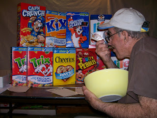

Yumm!
4/16/2009
{kind=link}

I'm working on an even dozen cereal box puppets. The hardest part of the project is eating all that cereal* so I can have the empty boxes! :-)
I selected nine brands, some by request, and others of my own choosing. The boxes vary slightly in size - seven different sizes. Since I only use the box as covering into which the completed mechanized plywood unit is inserted, I have to build the puppet units in seven different sizes. To save time I cut and sand all the hundreds of parts in one session, and then assemble the units as the "puppets" are sold. Keeping all the pieces in order is a challenge in itself!
The prototype has been completed and tested. So now I'm getting down to business with this set of twelve. All will have open and close mouth and open and close eyes. Glenn, your Cocoa Puffs will be the first one I complete. I hope to have it finished over the weekend. I'll have photo(s) at that point.
*About the cereal itself. Seriously, I now have 12 full sealed bags of fresh perfectly ready-to-eat cereal without their respective boxes. If anyone has a suggestion as to who or what organization might use this as a donation, staying within food health department guidelines, please let me know. mahertalk@aol.com